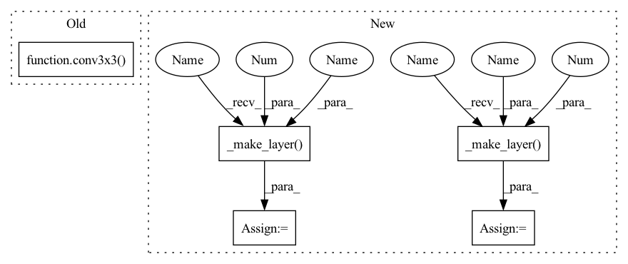

Pattern ID :1917

Before Change
// Both self.conv2 and self.downsample layers downsample the input when stride != 1
self.conv1 = conv1x1(inplanes, width)
self.bn1 = norm_layer(width)
self.conv2 = conv3x3(width, width, stride, groups, dilation)
self.bn2 = norm_layer(width)
self.conv3 = conv1x1(width, planes * self.expansion)
self.bn3 = norm_layer(planes * self.expansion)
self.relu = nn.ReLU(inplace=True)
After Change
self.conv1 = nn.Conv2d(3, self.inplanes, kernel_size=7, stride=2, padding=3, bias=False)
self.bn1 = self._norm_layer(self.inplanes)
self.relu = nn.ReLU(inplace=True)
self.layer1 = self._make_layer(BasicBlock, 64, 2)
self.layer2 = self._make_layer(BasicBlock, 128, 2, stride=2)
self.layer3 = self._make_layer(BasicBlock, 256, 2, stride=2)
self.layer4 = self._make_layer(BasicBlock, 512, 2, stride=2)
if pretrained:
self.load_pre_trained_weights()
In pattern: SUPERPATTERN
Frequency: 3
Non-data size: 5
Instances
Fragment ID: 4726345
Project Name: zhangheng19931123/mutualguide
Commit Name: fd2c4cc66d80d955aad4ca7ec6045a203dc095ea
Time: 2021-02-01
Author: heng.zhang@irisa.fr
File Name: models/resnet_backbone.py
M Class Name: Bottleneck
N Class Name: ResNetBackbone
M Method Name: __init__(2)
N Method Name: __init__(9)
M Parent Class: nn.Module
N Parent Class: nn.Module
M File Name: models/resnet_backbone.py
N File Name: models/resnet_backbone.py
M Start Line: 77
M End Line: 92
N Start Line: 56
N End Line: 74
'>
Before Change
// Both self.conv2 and self.downsample layers downsample the input when stride != 1
self.conv1 = conv1x1(inplanes, width)
self.bn1 = norm_layer(width)
self.conv2 = conv3x3(width, width, stride, groups, dilation)
self.bn2 = norm_layer(width)
self.conv3 = conv1x1(width, planes * self.expansion)
self.bn3 = norm_layer(planes * self.expansion)
self.relu = nn.ReLU(inplace=True)
After Change
self.conv1 = nn.Conv2d(3, self.inplanes, kernel_size=7, stride=2, padding=3, bias=False)
self.bn1 = self._norm_layer(self.inplanes)
self.relu = nn.ReLU(inplace=True)
self.layer1 = self._make_layer(BasicBlock, 64, 2)
self.layer2 = self._make_layer(BasicBlock, 128, 2, stride=2)
self.layer3 = self._make_layer(BasicBlock, 256, 2, stride=2)
self.layer4 = self._make_layer(BasicBlock, 512, 2, stride=2)
if pretrained:
self.load_pre_trained_weights()
'>
Fragment ID: 4726346
Project Name: zhanghengdev/mutualguide
Commit Name: fd2c4cc66d80d955aad4ca7ec6045a203dc095ea
Time: 2021-02-01
Author: heng.zhang@irisa.fr
File Name: models/resnet_backbone.py
M Class Name: Bottleneck
N Class Name: ResNetBackbone
M Method Name: __init__(2)
N Method Name: __init__(9)
M Parent Class: nn.Module
N Parent Class: nn.Module
M File Name: models/resnet_backbone.py
N File Name: models/resnet_backbone.py
M Start Line: 77
M End Line: 92
N Start Line: 56
N End Line: 74
'>
Before Change
self.conv1 = conv3x3(3, 64, stride=2)
self.bn1 = BatchNorm2d(64)
self.relu1 = nn.ReLU(inplace=True)
self.conv2 = conv3x3(64, 64)
self.bn2 = BatchNorm2d(64)
self.relu2 = nn.ReLU(inplace=True)
self.conv3 = conv3x3(64, 128)
self.bn3 = BatchNorm2d(128)
After Change
if dilated:
self.layer3 = self._make_layer(block, 256, layers[2], stride=1,
dilation=2, norm_layer=norm_layer)
self.layer4 = self._make_layer(block, 512, layers[3], stride=1,
dilation=4, norm_layer=norm_layer)
else:
self.layer3 = self._make_layer(block, 256, layers[2], stride=2,
norm_layer=norm_layer)
self.layer4 = self._make_layer(block, 512, layers[3], stride=2,
norm_layer=norm_layer)
self.avgpool = nn.AvgPool2d(7, stride=1)
'>
Fragment ID: 4726340
Project Name: bubbliiiing/pspnet-pytorch
Commit Name: a2edae43200ce7bc6987f158a97708253a7e281b
Time: 2022-04-16
Author: 3323290568@qq.com
File Name: nets/resnet.py
M Class Name: ResNet
N Class Name: ResNet
M Method Name: __init__(7)
N Method Name: __init__(4)
M Parent Class: nn.Module
N Parent Class: nn.Module
M File Name: nets/resnet.py
N File Name: nets/resnet.py
M Start Line: 58
M End Line: 75
N Start Line: 60
N End Line: 94